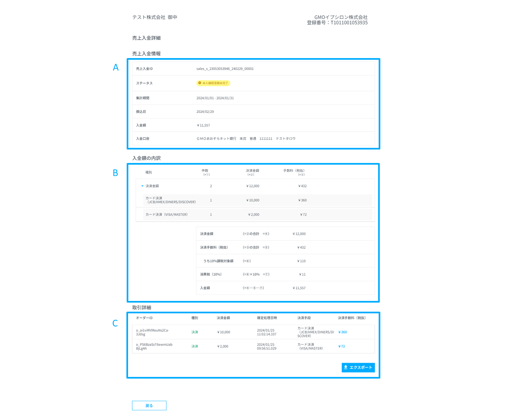
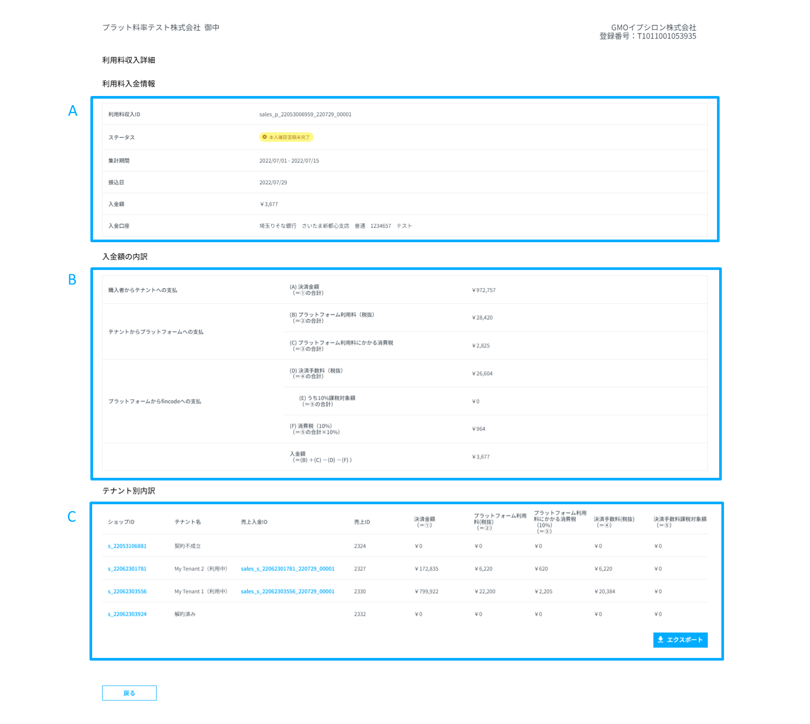
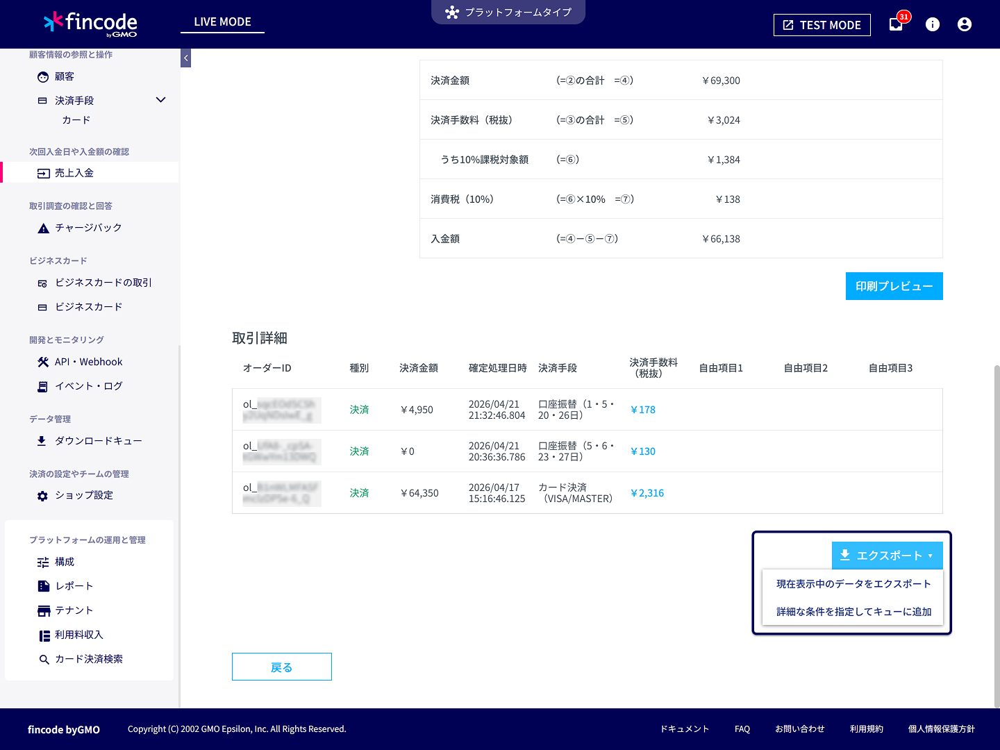
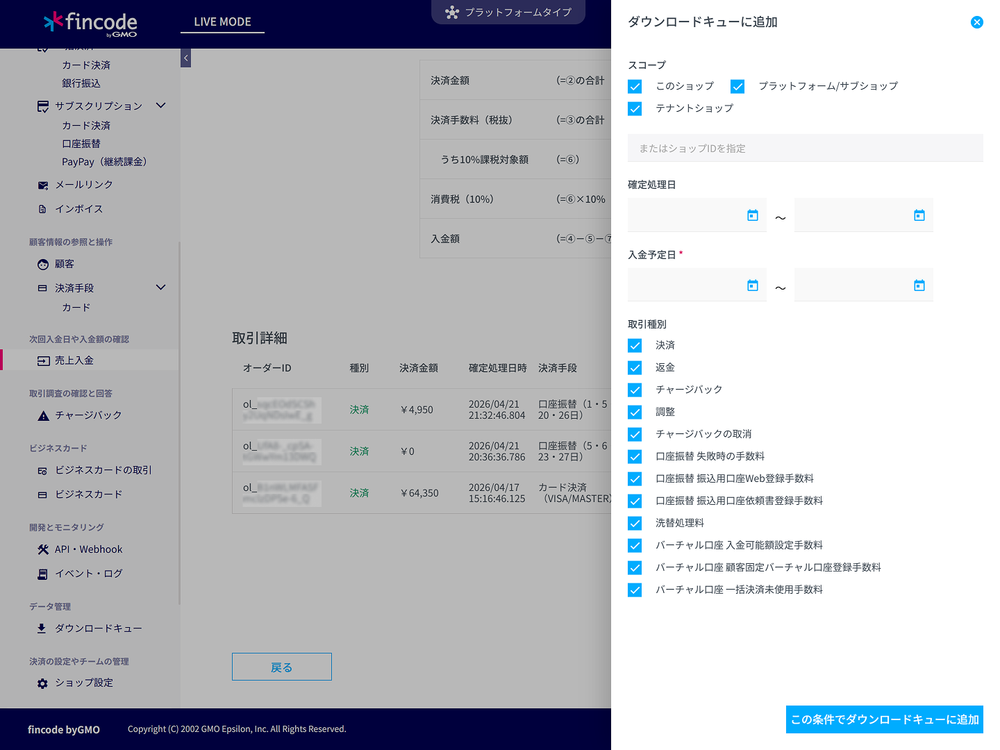

管理销售款入账等事项
通过 fincode 支付功能产生的销售款，以及通过平台功能产生的使用费收入，均会按各商户设置的“入账周期”汇入相应商户。
可在各商户的管理后台查看入账日期和入账金额明细。
| 商户类型 | 项目 | 入账周期 | 管理后台 菜单 |
|---|---|---|---|
| 标准 | 商户通过支付产生的销售款 | 标准商户的入账周期 | 销售款入账 |
| 平台 （主商户） | 商户通过支付产生的销售款 | 平台（主商户）的入账周期 | 销售款入账 |
| 从租户商户的销售款中扣除的 平台使用费 | 平台（主商户）的入账周期 | 使用费收入 | |
| 平台 （子商户） | 商户通过支付产生的销售款 | 平台（子商户）的入账周期 | 销售款入账 |
| 租户商户 | 商户通过支付产生的销售款 | 租户商户的入账周期 | 销售款入账 |
- 根据入账周期，每个汇总期间生成一个销售款入账 ID（或使用费收入 ID），并按 ID 结算。
- 入账转账手续费由 fincode 承担。
- 结算金额在入账周期对应的结算截止日次日确定。
入账周期
入账周期如下。
| 入账周期 | 汇总期间 | 入账日期 |
|---|---|---|
| 标准（每月一次） | 一个月（1 日至最后一日）的销售款 | 次月最后一日 |
- 如果入账当天金融机构或汇款方 GMO Epsilon 休业，则提前至上一工作日入账。
- 使用 fincode 商务卡期间，汇总期间的结算截止日由当月最后一日改为次月 10 日。入账日期保持不变。
详情请参阅此处。
查看入账金额
查看支付产生的销售款
将支付产生的销售款扣除 fincode 收取的款项后，转入商户指定账户。
可在管理后台“销售款入账”查看入账金额明细。
“销售款入账”中的信息也可通过销售款入账 API获取。
销售款由 GMO Epsilon 名下的账户汇出。

| 对应部分 | 显示项目 |
|---|---|
| A．销售款入账信息 | 销售款入账 ID、状态、汇总期间、转账日期、入账金额、转账账户 |
| B．入账金额明细 | 各支付方式的销售金额，以及 fincode 收取的款项※的明细 ※fincode 收取的款项包括手续费、跨入账周期结算截止日的取消款项、拒付款项等。 租户商户扣除的是平台使用费。 |
| C．交易明细 | 按订单 ID 列出的结算明细 • 交易明细可导出为 CSV，步骤请参阅导出交易明细。 • 在交易状态变为“请款完成”的次日反映。 • 按订单 ID 显示的消费税为参考值。 • 发生取消时，取消操作对应的订单 ID 将新增一条负金额记录。 • 修改金额时，执行修改金额的订单 ID 将新增以下记录。 - 按修改后金额记录一条 - 按修改前金额记一条负数 |
- 卡片支付等部分支付方式的支付手续费包含 fincode 服务使用费和支付服务商手续费。fincode 服务使用费应税，支付服务商手续费免税。
可在“入账金额明细”查看支付手续费中的应税金额。各项费用的细目及计算方法不公开。 - 平台使用费全额应税。
- 如果 fincode 收取的款项超过销售款，须通过银行转账支付。
各商户 ID 对应的收款账户不同，请汇入指定账户。
- 使用商务卡期间，销售款入账的结算截止日会变更。
因此，如果在启用商务卡前已到结算截止日，且销售款入账状态曾变为3002：金额已确定，之后又在商务卡适用的销售款入账结算截止日之前启用商务卡，截止日会发生变化，状态可能恢复为3001：金额未确定。
查看平台使用费收入
平台使用费扣除 fincode 手续费后，汇入平台（主商户）。
可在管理后台（主商户）的“使用费收入”查看入账金额明细。
“使用费收入”中的信息也可通过销售款入账 API获取。

| 对应部分 | 显示项目 |
|---|---|
| A．使用费入账信息 | 使用费收入 ID、状态、汇总期间、转账日期、入账金额、转账账户 |
| B．入账金额明细 | 购买者向租户商户付款的明细、租户商户向平台付款的明细，以及平台向 fincode 付款的明细 |
| C．各租户商户明细 | 各租户商户按销售款入账 ID 列出的结算明细 交易明细可导出为 CSV。 |
导出交易明细
在管理后台的［销售款入账］打开目标销售款入账 ID，点击［交易明细］下方的［导出］按钮。
可选择以下两种导出方法。

| 导出方法 | 说明 |
|---|---|
| 导出当前显示的数据 | 将当前画面显示的交易明细直接下载为 CSV 文件。 |
| 指定详细条件并加入队列 | 指定筛选条件并提交导出请求。生成的文件可从下载队列获取。 |
如需导出超出当前画面显示范围的全部交易，请使用［指定详细条件并加入队列］。
指定筛选条件并加入队列
点击［指定详细条件并加入队列］后，将显示［添加到下载队列］侧边面板。
指定筛选条件后，点击［按此条件添加到下载队列］。

可指定的筛选条件如下。
| 筛选条件 | 填写内容 |
|---|---|
| 范围 | 从［当前商户］［平台／子商户］［租户商户］中选择导出范围。 |
| 指定商户 ID | 可直接指定目标商户 ID。指定商户 ID 后，范围设置将被忽略。 |
| 确定处理日期 | 指定交易完成确定处理的日期范围。该日期在销售款入账信息中显示为“汇总期间”。 |
| 预计入账日期 必填 | 指定各笔交易所保存的预计入账日期范围。 |
| 交易类型 | 可选择支付、退款、拒付、调整，也可选择银行账户扣款或虚拟账户相关的各类手续费。 |
- 确定处理日期和预计入账日期均最多可指定一个月。开始日为 n 日时，最晚可指定到次月 n 日的前一天。
- 须指定预计入账日期。
销售款入账信息中的“转账日期”是该次销售款入账（结算）的转账日期。筛选条件里的“预计入账日期”是逐笔交易保存的预计日期。设置条件时请区分。
只有平台（主商户）可以跨多个商户导出。
其他商户类型的目标范围固定为当前登录的商户。
获取生成的文件
fincode 会根据队列中的条件异步生成文件。
文件的获取方法、下载期限和可保存文件数，请参阅下载队列。
导出文件包含已反映到交易明细中的数据。关于数据反映时间，请参阅查看入账金额。